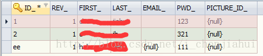

版权声明：本文为博主原创文章，未经博主允许不得转载。 https://blog.csdn.net/i_chenjiahui/article/details/45844141
在工作中使用到了将任务派发给用户组处理，第一次使用，查了点资料，写了个demo。
首先，查看数据库中关于用户、用户组的表结构：
可以看出来，用户、用户组相关的表其实与其他的activiti表无关联。我们可以使用自己的一套用户、用户组管理，而且官方也是建议使用自己的用户用户组权限管理的。
怎么使用自己的用户、用户组管理以后会在另写一篇，这里就不介绍了。
首先我们创建一个测试用的bpmn
如上图中，我们对Group Task节点，添加了两个用户组：groupB和GroupC。注意，要用英文逗号。
在用户表，用户组表，关系表中插入用户、用户组，以及关联信息。
用户表：act_id_user

用户组表：act_id_group
关系表：act_id_membership
将流程定义跑到Group Task节点，查询用户组任务。
List<String> groupIds = new ArrayList<String>();
groupIds.add("groupB");
groupIds.add("groupC");
// List<Task> list = processEngine.getTaskService()
// .createTaskQuery().
// taskCandidateGroup("groupB，groupC")//在设置多个用户组时，使用了中文逗号，导致activiti解析时，认为是一个名字为“groupB，groupC”的组。
// .list();
List<Task> list = processEngine.getTaskService().createTaskQuery().taskCandidateGroupIn(groupIds).list();
if(list!=null && list.size()>0){
for(Task task:list){
System.out.println("任务ID:"+task.getId());
System.out.println("任务名称:"+task.getName());
System.out.println("任务的创建时间:"+task.getCreateTime());
System.out.println("任务的办理人:"+task.getAssignee());
System.out.println("流程实例ID："+task.getProcessInstanceId());
System.out.println("执行对象ID:"+task.getExecutionId());
System.out.println("流程定义ID:"+task.getProcessDefinitionId());
System.out.println("########################################################");
}
}
要效果好点，可以改成动态设置几个不同的任务组执行任务，再使用上述代码查询任务组任务。
也可以使用以下代码查询用户的组任务：
String candidateUser = "ee";
List<Task> list = processEngine.getTaskService()//与正在执行的任务管理相关的Service
.createTaskQuery()//创建任务查询对象
/**查询条件（where部分）*/
.taskCandidateUser(candidateUser)//组任务的办理人查询
/**排序*/
.orderByTaskCreateTime().asc()//使用创建时间的升序排列
/**返回结果集*/
.list();//返回列表
if(list!=null && list.size()>0){
for(Task task:list){
System.out.println("任务ID:"+task.getId());
System.out.println("任务名称:"+task.getName());
System.out.println("任务的创建时间:"+task.getCreateTime());
System.out.println("任务的办理人:"+task.getAssignee());
System.out.println("流程实例ID："+task.getProcessInstanceId());
System.out.println("执行对象ID:"+task.getExecutionId());
System.out.println("流程定义ID:"+task.getProcessDefinitionId());
System.out.println("########################################################");
}
}